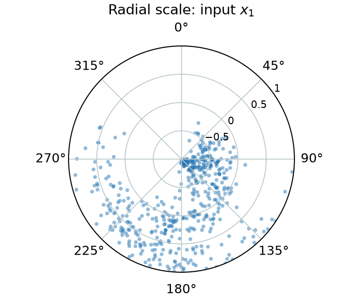
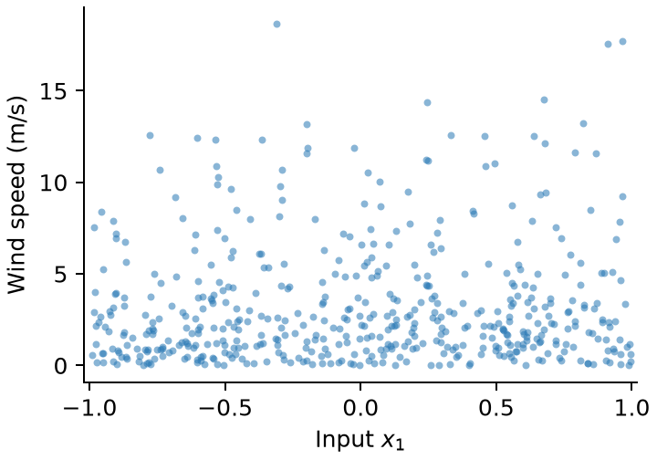

本页目录
作业与分工
作业题目来自《Understanding Deep Learning》习题 5.3 和 5.10 ：要求自己生成数据，写出损失函数，再训练和比较模型。两人轮流写代码、查结果。可以用 AI 辅助编程，验收时每个人都要讲清自己的代码和原理。
数据要求
下载 generate_data.py，放入 src/。按下面的规则生成数据，每条样本包括三个环境变量 x、一个风向 θ（弧度）和一个风速 v（m/s）。
请自己选两个不同的非负整数作为随机种子，记在 src/README.md 中。把下面命令里的 123 和 456 换成你选的数，在项目根目录运行。
python -m pip install numpy matplotlib
python src/generate_data.py --train-seed 123 --val-seed 456生成的两份数据保存在 data/train.npz 和 data/val.npz。比较不同模型时，始终使用这两份数据。
| 数据集 | 样本数 | 用途 |
|---|---|---|
| Training | 5,000 | 学习网络权重 |
| Validation | 1,000 | 选择超参数（隐藏层数、每层宽度、学习率），确定早停轮次，计算验证集指标。 |
| Testing | 2,000 | 由老师生成，验收时使用 |
数据生成
三个输入x
wrap 把角度折回 [−π, π)，σ 表示 sigmoid。上面的公式只用来造数据。预测新样本时，只给网络输入 x，由网络输出 μ 和 λ。
生成数据并检查
10 分A 生成数据并画图，B 检查。
- 选一个输入分量，画两张图。风向用圆周散点图，角度表示风向，半径表示所选输入分量。风速用普通散点图，横轴取同一输入分量，纵轴为风速（m/s）。
- 检查风向是否在 [−π, π) 内、风速是否非负。用同一个种子再生成一次，比较两次结果。


下载 plot_data.py，放入 src/。生成数据后，在项目根目录运行：
python src/plot_data.py两张图会保存到 results/。绘图逻辑仅供参考，你也可以自己写 plot_data.py，比如比较三个输入分量各自与风向、风速的关系。
提交材料 将 generate_data.py 和实际使用的 plot_data.py 放入 src/，两张散点图放在 results/。训练集和验证集用的种子记在 src/README.md。Q1 写在 Answer 里。
同一个输入，为什么能得到不同的风向和风速？为什么 179° 和 −179° 很接近？
建立网络与联合 NLL
30 分B 写网络和损失函数，A 检查。
- 用一个共享 MLP，接两个输出分支。一个预测中心风向 μ（κ 固定为 8），另一个用 Softplus 输出正的速率 λ。
- 手推完整的联合负对数似然（NLL）。从风向和风速的条件密度出发，写出联合密度、单个样本的 NLL 和整批样本的平均 NLL，再把损失函数写进
loss.py。 - 用同一批数据和分布参数，通过 PyTorch 的
log_prob()算一次 NLL，和自己的结果核对。
提交材料 model.py、loss.py 和 test_loss.py 放在 src/。在 Answer 的 Q2 中写出联合 NLL 的手推过程，并回答下题。
为什么 Softplus 输出的 λ 不是风速？它与平均风速有什么关系？为什么联合 NLL 可以写成两项损失之和？
训练与验证集调参
20 分A 训练模型，B 做对照实验。
- 用 Adam 训练至少三种配置。可以改隐藏层数、每层宽度或学习率，记下每次改了什么。
- 用验证集 NLL 选模型。如果连续多轮没有改善，就提前停止，保留验证 NLL 最低那一轮的权重。
- 训练和验证损失画在同一张图上：训练用实线，验证用点线，图例写清配置。
提交材料 程序放在 src/train.py，超参数配置表和训练、验证损失曲线放在 results/。最佳权重 best_model.pt 放在提交文件夹的根目录。Q3 写在 Answer 里。
为什么不能用测试集选网络超参数？如果训练损失下降而验证损失上升，这说明什么？
模型评价与边界反例
20 分B 算指标，A 核对。
- 在验证集上算三项指标：完整联合 NLL、风向 Circular MAE 和风速 MAE。风向误差取圆周最短距离，注明用度还是弧度。
- 用平均风速 1/λ 算风速 MAE，单位是 m/s。
- 用 179° 和 −179° 做例子，画图比较普通角度 MSE 和 von Mises 损失。
- 写一个测试接口：载入权重，输入新的 x，输出 μ 和 λ。
提交材料 评价程序和测试接口写在 src/evaluate.py，验证集指标表和边界反例图放在 results/。Q4 写在 Answer 里。
即使学对了风速分布，为什么测试样本越来越多，风速 MAE 也不会趋近于零？
教师独立测试与验收
20 分老师换一个随机种子，按同样的规则生成 2,000 条测试数据，用 Task 3 的 best_model.pt 和 Task 4 的 src/evaluate.py 统一测试。两位组员分别讲解自己的代码和原理，现场单独评分。
提交作业
每组交一个压缩包。文件夹按“队员1_学号1_队员2_学号2”命名，例如 张三_266003_李四_266004。打包前按下表核对。
| 文件位置 | 交什么 |
|---|---|
src/ | 全部 Python 代码，包括 generate_data.py、plot_data.py、model.py、loss.py、test_loss.py、train.py 和 evaluate.py。测试接口写在 evaluate.py。 |
src/README.md | 记下训练集和验证集的随机种子，写清生成数据、训练、载入权重和评价的运行命令。 |
results/ | Task 1：风向圆周散点图、风速散点图。 Task 3：超参数配置表、训练与验证损失曲线。 Task 4：验证集指标表、179° 和 −179° 的边界反例图。 |
best_model.pt | 放在根目录，提交验证集 NLL 最低时保存的模型权重。 |
Answer 文档 | 放在根目录，按顺序回答 Q1～Q4，合计不超过 3 页。Q2 中写出完整联合 NLL 的手推过程。 |
说明 文档 | 放在根目录，写清两位组员各自的分工和代码贡献。 |
Answer 和 说明 两份文档均可用 PDF、Word（.doc）或 Markdown 格式。
参考资料
查阅两种分布的密度与符号
p(v | λ) = λ exp(−λv)，v ≥ 0，λ > 0
μ 为中心风向，κ 为集中度，本作业固定为 8。I₀ 为零阶第一类修正 Bessel 函数。风速分支将实数输出 a 通过 Softplus 映射为正的速率参数 λ。